Mentorlink
Key Technologies Used: HTML/CSS/JS, repl.it, Trello, Slack
Project Description:
Mentorlink is a website I worked on in collaboration with five other students for my Senior Captsone class in Information Systems at ASU.
We used an Agile approach to develop the website over the course of four, week long sprints and communicated via Slack, Trello Boards,
and Zoom meetings. We used REPL.it, an online develoment platform to give us the ability to write live code together remotely and collaborate
without having to worry about accidentally overwriting someone's work -- if you're not familiar with it, think the Google Workspace but for coding.
I was on the development side of the project, focusing on site navigation and functionality, utilizing JavaScript to enable page traversal
and updating thread posts. Each week I participated in team meetings discussing our plans for the upcoming week's sprint, and the tasks we would take on to
accomplish those goals. We utilized a Scrum framework to organize our team roles, and throughout the week our "Scrum Master" would periodically
reach out to see how we were progressing through the sprint.
One of the biggest challenges we faced during this project was doing everything remotely, as ASU still had limited campus access in the Spring of 2021 when this was developed.
Coordinating meetings, tasks, and general communication was slow-going until we started getting into the general workflow of online collaboration. Fortunately, this was our
second project I had worked on with this team, so it was a lot more seamless than the first project.
Key Takeaways/Skills Learned:
Input Validation for account creation / dynamically adding/removing html content using JS / Remote Collaboration / local storage implementation
Restaurant Search Website
Key Technologies Used: HTML/CSS/JS, repl.it, Slack, Trello
Project Description:
This was the first group project I worked on for my Capstone in Information Systems class at ASU, and later on I'd continue to work with the same group to build our Mentorlink site. Throughout our time working togeter we used an Agile approach with a Scrum based framework.
Using these methodologies, and having our sprint goals listed out on our Trello board enabled us to collaborate efficiently and keep team members up to date on our progress -- even though at the time we were 100% remote due to the Corona Virus lockdown.
This project was more focused on functionality than aesthetics, as it was meant to serve as a launching point for our second major project. Because of this, we were only given a limited timeframe to work with and it was completed in only three, week-long sprints.
I was on the development team for this project and worked on implementing administrator functionality and restaurant review features primarily using JavaScript.
Through working on this restaurant search website I learned how important it is to understand the role every member of the team plays, and pay attention to the
functionality they are implementing, in order to ensure the code remains consistent and compatible. For example, I had to work closely with the developers working on the login
and user profiles to make sure the administrator and restaurant review features utilized the the login/user privelage functions they were working on. Thanks to this coordination and consistent use
of an updated Trello board, we were able to get our project to a presentable state that could serve as a foundation for bigger web apps in the future.
Key Takeaways/Skills Learned: online/group project collaboration / agile and scrum development methodologies
Key Technologies Used: node.js / mySQL / HTML/CSS/JS
Project Description:
A group project I worked on with two other students for my Web Technologies class at ASU. Our goal for this project was to develop a new website for a local
business that implments various features such as integration with a mySQL database to pull pricing information, a cart system that calculates total price, and a contact page
with all relevant links and maps. This was my first project using node.js to enable access to a mySQL database, in this case, it was used to access menu pricing for the various dishes
served by the restaurant.
Key Takeaways/Skills Learned: using node.js to communicate with databases and utilize the retrieved data in various calculations / utilizing iframes to embed content onto a site
Key Technologies Used: HTML/CSS/JS
Project Description:
Investing web app that calculates investment timelines based on user input.
Key Takeaways/Skills Learned:
using JS to collect user input and perform calculations based on the information entered by the user
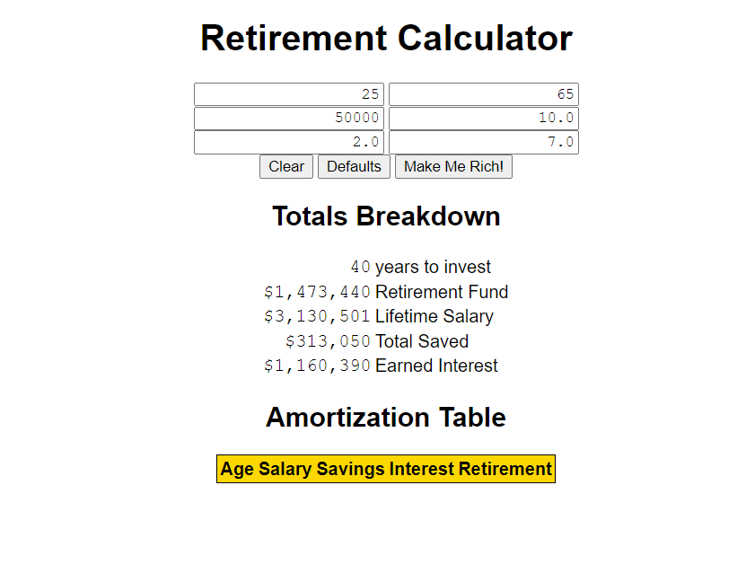
Key Technologies Used: HTML/CSS/JS
Project Description:
Web app that determines colors based on user input and slider interaction.
Key Takeaways/Skills Learned: using JS to dynamically alter page elements based on user selection
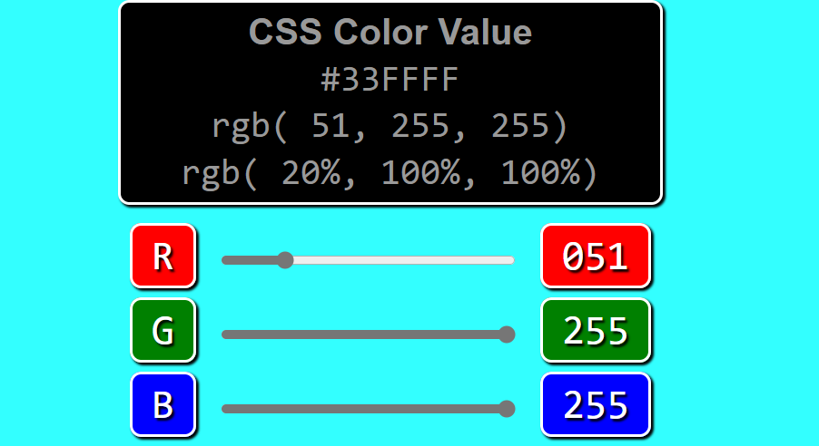
Key Technologies Used: HTML/CSS/JS
Project Description:
Simple, functioning calculator web app / helped with output testing
Key Takeaways/Skills Learned: exception handling to ensure users can't accidentally cause crashes (zero division exceptions)

Key Technologies Used: Java
Project Description:
Java app that allows users to manage a class of students and their individual test scores. Users can select any number of quizzes they
want and the app will calculate: class average, student average, and quiz average based on the user entered data.
Key Takeaways/Skills Learned: creating an array with a size determined by user input / looping through arrays to perform calculations and displaying the results
Key Technologies Used: Java
Project Description:
Java app that is an electronic device checkout system that provides features such as current rental status for an item, item search, ability to update and
delete items from the array, add new device (generates unique SKU), and more.
Key Takeaways/Skills Learned: adding/updating/deleting content from an array
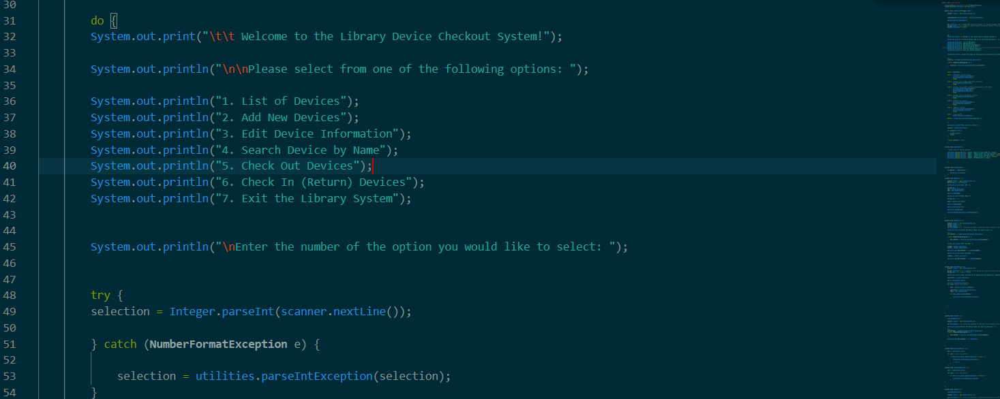
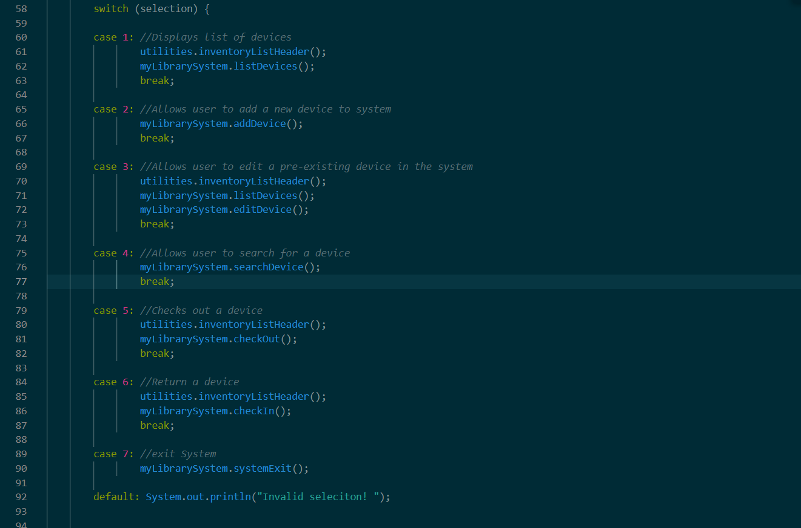
Key Technologies Used: Python
Project Description:
Employee management app that keeps track of employee information and lists all employees under a certain manager. Focuses on inheritance
as all managers inherit the traits of the employee class.
Key Takeaways/Skills Learned: applying inheritance and parent-child relationships to python
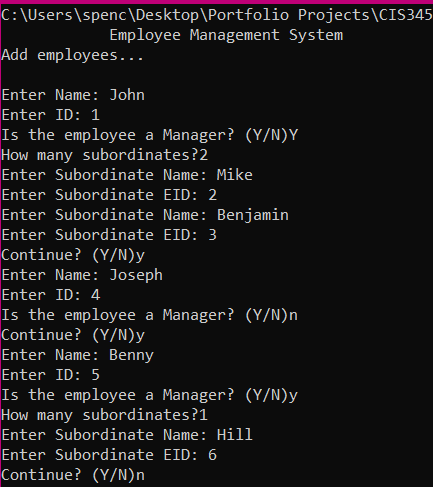
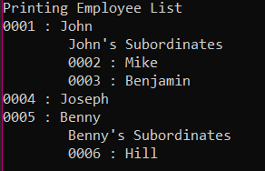
Key Technologies Used: Python
Project Description:
Python chat server that enables multiple clients to connect directly to the server module and communicate real time.
Key Takeaways/Skills Learned: GUI Chat implementation / enabling communication between multiple instances of an app client by connecting to a server program
Key Technologies Used: HTML/CSS/JS / VoltBuilder / node.js / mySQL
Project Description:
Mobile-first focused, web app, that connects to a sql database and allows a user to search for popular baby names based on a given
state and year, and provides the user with clean visual representation of the frequency of certain names.
Key Takeaways/Skills Learned: creating mobile apps using HTML/CSS/JS with voltbuilder / creating graphs from data retrieved from mySQL queries
Key Technologies Used: HTML/CSS/JS / VoltBuilder
Project Description:
Mobile app study that aimed to take advantage of the motion control on smart phones to dynamically change the screen color as the
user shakes their device.
Key Takeaways/Skills Learned: Utilizing JS to change elements of the screen by detecting when user shakes their phone
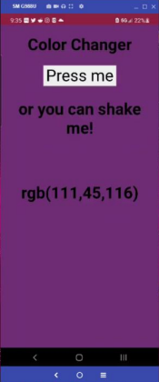
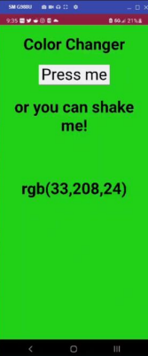
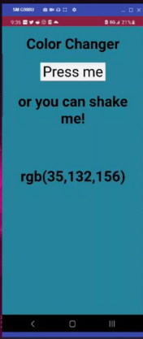
Key Technologies Used: HTML/CSS/JS / VoltBuilder
Project Description:
Mobile app study that uses the built in gyroscope on smartphones to provide locational information to the user and gives the user a live graphical
representation of the data as it is being processed.
Key Takeaways/Skills Learned: using gyroscope in smartphones to provide input for program functions / integrating 3rd party frameworks into development
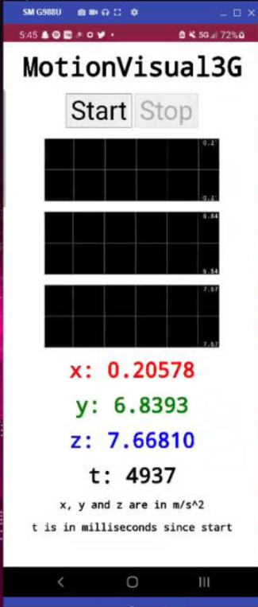
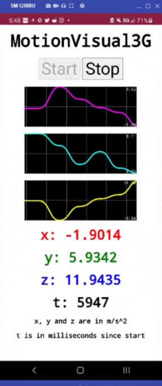
Key Technologies Used: SQL / Slack / Tableau
Project Description:
Report for a custom SQL database solution I worked on in collaboration with a group of peers for my Database class to integrate a new SQL Database
into a business that is looking for a new way to keep track of all of their data. In this case, our report was based on a Dog Grooming company,
and we had to design a database that would keep track of employee, customer, dog, and pricing information while sticking to the current format
of their business rules.
From there we worked on creating visualizations based on queries ran on the database, so the company can understand the current state of their business and view
valuable analytics about their customers.
Key Takeaways/Skills Learned: Database Structure / Data Visualization
Current Projects:
Lifter (Alternative Metal band) - self recording our first album. 12 songs written, we've started tracking 6 of those songs so far.
Busy Signals (Solo Metal Project) - Been working on a solo album since December of 2020. Currently have over 20 songs started, 13 of those
are mostly written, just need to polish the tracking.
The Color Purple (synth experiment) - Last year I bought a midi keyboard and accidentally started writing a synthwave EP. Currently have 5 demos,
just needs to be mixed.
Lifter
Lifter is the main music project I'm working on at the moment. I've been working recording an album in collaboration with my best friend, Greyson,
since the Summer of 2020. We've have roughly 15-20 songs in the works, and we've been making music together since high school. We used to have a full
lineup and were going to be a live band, but we decided we had more fun taking our time to write the music we want to write, on our own terms, rather than ending up in a position where we
would be forced to make music to support our families. We both have full time jobs, and *gasp* adult responsibilities, but that doesn't impact the project too much since
there's no pressure of deadlines or monetary incentives pushing us to make the songs. Music is a hobby, and if people end up liking the songs we put out, then great, and if not, we're still
gonna be making music because its fun.
Busy Signals
The name is subject to change, but this is a solo metal project I'm working on. Usually these songs are born from me running my guitar into Cubase and messing
around with random VSTs. I'm constantly going back and retracking/changing certain aspects of the songs as I learn more about mixing, but little by little
I'm getting these songs where I want them to be.